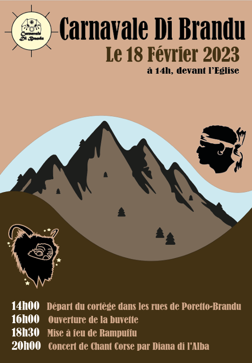
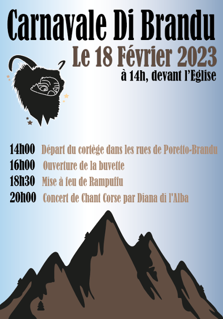
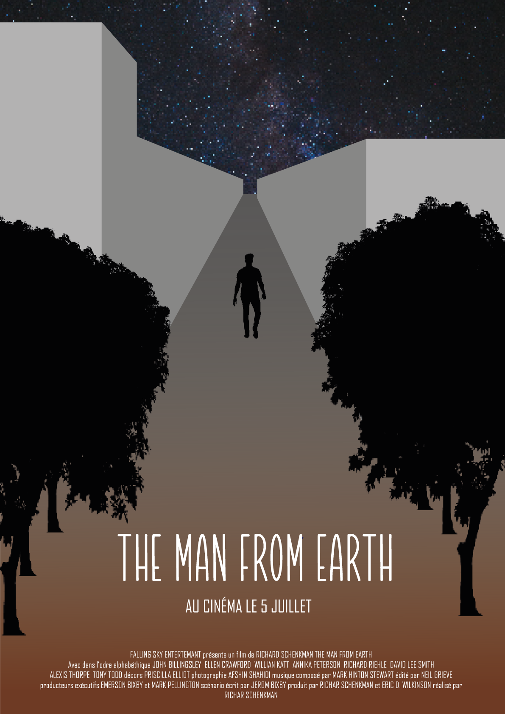
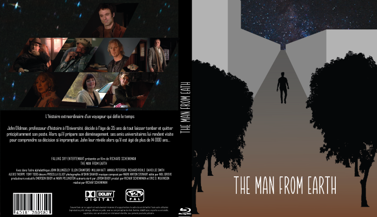
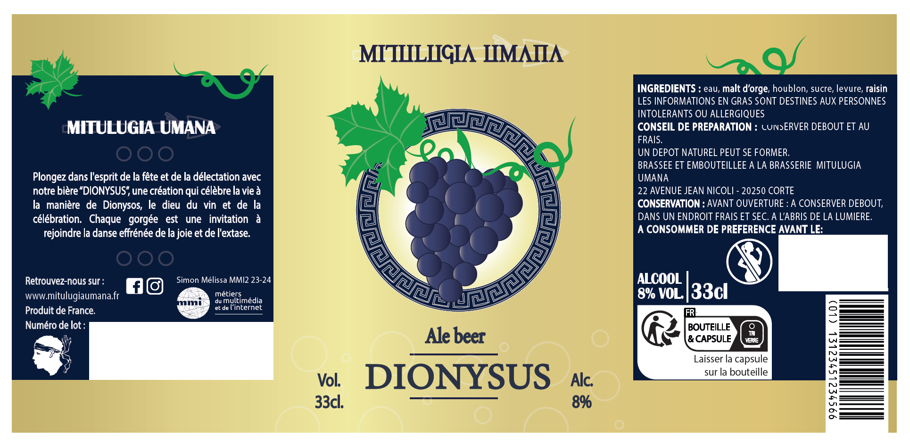
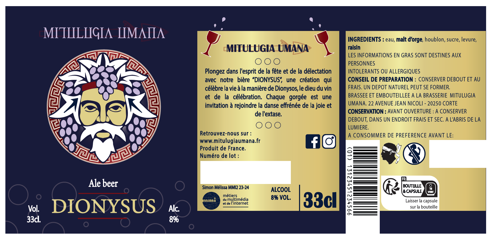
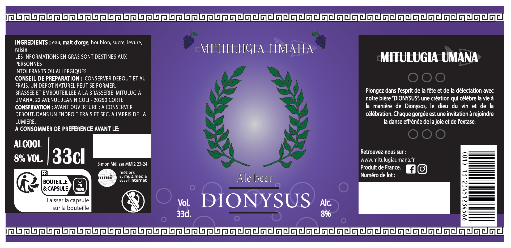
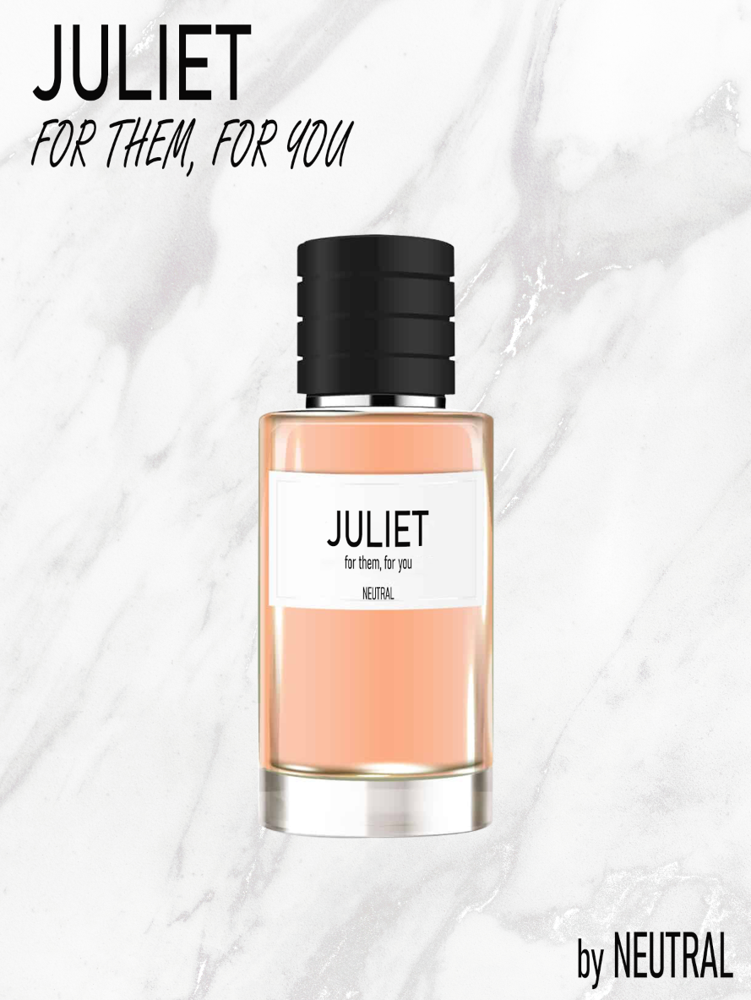
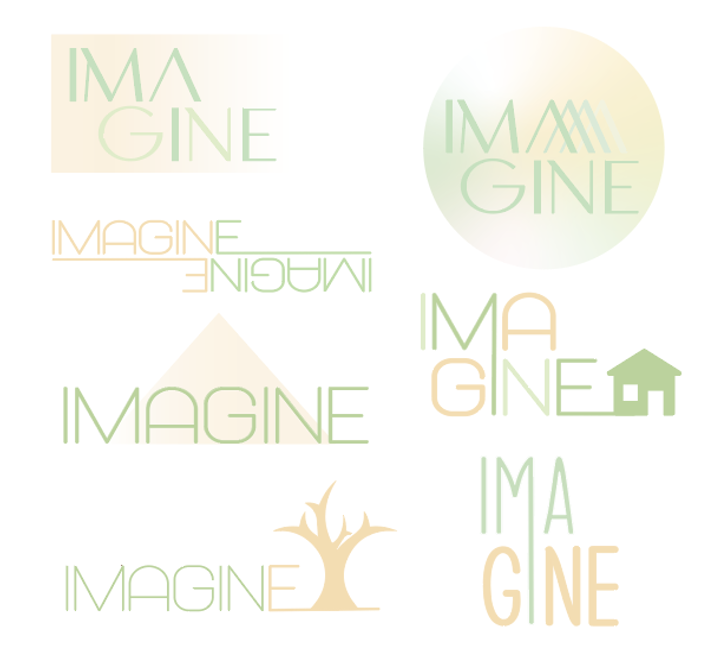
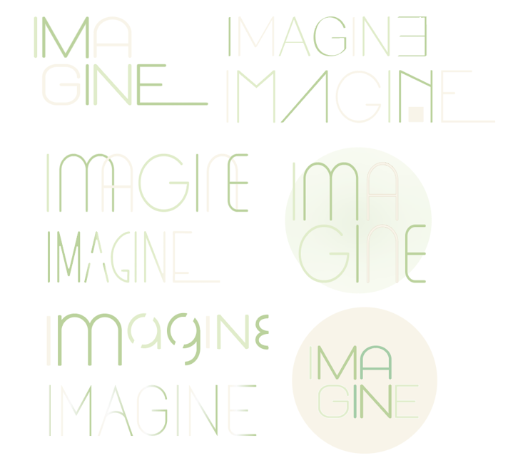

Produire les éléments d’une communication visuelle
CARNAVALE DI BRANDU
La SAE 103 a pour but d’entraîner l’étudiant à la création d’éléments graphiques tels que le logotype, l’affiche, un le flyer, des t-shirts, des goodies, des photos, le choix typographique, des éléments web et réseaux sociaux qui sont nécessaire à une communication.
Cette SAE se porte sur le thème du Carnavale di Brandu qui est un carnaval Corse basé sur les traditions ancestrales de la région. Il se produit à Poretto-Brando sur les côtes au Nord de la Corse.
Une affiche sert à donner à un large public une information de nature officielle ou publicitaire.
Pour l’affiche du Carnavale di Brandu, j’ai décidé d’utiliser comme colorimétrie ces différentes
couleurs comme expliquer dans la typographie. J’ai désigné un soleil avec le ton jaune pâle en incrustant le logotype pour le positionner en haut à
gauche de l’affiche, cela sera qui attirera l’œil du client en premier. Ensuite, je savais qu’il fallait que j’ajoute un rappel de personnage du carnavale, donc détouré une
image de u pillacciaru en ajoutant des étoiles pour le contraste jour/nuit de du carnaval. Ensuite j’ai détouré une image de montagne en ajoutant des sapins, je l’ai colorié en noir pour le
faire ressortir de la couleur brune que j’utilise pour le colorié.Pour faire apparaître la Corse, région de l’endroit où se trouve Poretto-Brando, j’au utilisé le symbole
de la Corse que j’ai incrusté de l’autre côté de la montagne.En assemblant tout ces éléments, je me suis inspiré du le ying et le yang pour l’affiche. J’ai utilisé
pour le dessus un rose pastel pour faire penser au ciel rose en fin de journée en ajoutant de soleil en
haut à gauche et à sa droite les informations les plus importantes avec la police Bernard MT
Condensed de couleur noir mais l’information du milieu en marron pour faire ressortir chaque ligne.
En arrière-plan du haut de la montagne, j’ai ajouté un bleu pastel.
Sur la partie inférieure de l’affiche, j’utilise des tons bruns en ajoutant les informations du dérouler
de la journée de couleur rosé et blanc pour faire un contraste.

Le flyer est une feuille volante qui sert de support publicitaire, afin de promouvoir un produit, une
prestation ou encore des manifestations culturelles ou sportives. Il s’agit d’un support de communica
tion, auquel de nombreuses entreprises ont recours pour se faire connaitre auprès de leurs clients ou
de leurs futurs clients.
Ce support de communication, facile à utiliser est plébiscité pour son moindre coût et sa facilité d’uti
lisation. C’est pourquoi, il est le plus utilisé dans l’évènementiel, notamment pour la publicité d’un
évènement particulier. Pour le flyer du Carnavale di Brandu, j’ai réutilisé différents éléments de l’affiche d’une façon plus
minimaliste. J’ai changé la colorimétrie pour accentuer beaucoup plus le ciel dans cette autre version format flyer. J’ai repris la base de l’affiche en supprimant l’effet Ying et yang, juste un allongement de la montagne
jusqu’à très haut dans le ciel pour le superposé avec les différentes informations. J’ai changé la couleur des heures maintenant que son arrière-plan à une touche de blanc en noir pour avoir du
contraste.

COMPÉTENCES ACQUISES
-EXPRIMER-
– AC13.02 | Produire des pistes graphiques et des planches d’inspiration
– AC13.03 | Créer, composer et retoucher des visuels
– AC13.06 | Optimiser les médias en fonction de leurs usages et supports de diffusion
NOTE : 11,01/20
The Man From Earth
Concevoir un produit ou un service et sa communication
THE MAN FROM EARTH
«The Man From Earth » est un film de 87 minutes dont le grand thème est la
science-fiction, réalisé par Richard Schenkman basé sur le scénario de Jérome Bixby
écrit en 1990. Un professeur d’université âgé d’une trentaine d'années du nom de
John Oldman décide de prendre sa retraite et de partir. Ses collègues l’interceptent
avant son départ pour une confrontation. Il révèle alors avoir 14 000 ans, un secret
qui remet en doute toute croyance.
Ce travail est la SAE 202 qui contenue a créé une stratégie de comunication que vous pouvez retrouver dans le pdf et des graphiques tel que une affiche d'un film et un DVD sur la base du film THE MAN FROM EARTH.
Dans cette SAE, il a fallu réaliser en utilisant les outils Illustrator et Photoshop une
affiche du film « The Man From Earth ». On a basé notre affiche sur un triangle qui
pointe vers le haut qui représente la religion au niveau symbolique, et je l'ai intégré
sous la forme d'une perspective, d'un chemin qui représente l'évolution. Qui
commence par la nature et fini par la ville (technologie). On retrouve
la palette de couleur qui correspond au gris de l’urbanisation, au marron de la nature,
au bleu de l’espace et au noir de l’infinité. Pour finir, on trouve une typo Valentine
pour le titre du film et une typo Agency FB pour tout autre texte.

Pour le DVD, on retrouve l’affiche en couverture. A l’arrière, on retrouve les
images des acteurs dans un photo montage avec en dessous le résumé du film
« The Man From Earth ».

COMPÉTENCES ACQUISES
-CONCEVOIR-
- AC12.01 | Concevoir un produit ou un service en terme d’usage et de fonctionnalité
- AC12.03 | Proposer une recommandation marketing (cibles, objectifs, points de contact)
- AC12.04 | Proposer une stratégie de communication -EXPRIMER-
- AC13.01 | Ecrire pour les médias numériques
- AC13.02 | Produire des pistes graphiques et des planches d’inspiration
- AC13.04 | Tourner et monter une vidéo (scénario, captation image et son...)
– AC13.06 | Optimiser les médias en fonction de leurs usages et supports de diffusion -ENTREPRENDRE-
– AC15.01 | Gérer un projet avec une méthode classique
– AC15.04 | Analyser un produit ou un service innovant en identifiant les propositions de valeurs et en évaluant les solutions proposées
NOTE : 13,39/20
La Bière Dionysos
Produire des contenus pour une communication
LA BIÈRE DIONYSOS
La SAÉ tourne autour du packaging d’une bière fictive, parfumée à un élément au choix del’étudiant.
Le choix de l’ingrédient ou du goût ajouté à la bière n’est pas anodin puisque lacommunication du
produit final doit défendre l’idée, l’association. La cohérence entre le choix debouteille, le goût
de la bière et les éléments de communication doivent faire apparaître une logiquede production à
destination d’un consommateur type. J'ai décidé de prendre l'histoire de la mythologie et particulièrement
Dionysos et le raisin.

Pour la première étiquette, j’ai choisis une grappe de raisin entouré de méandre Grec (Maiandros) comme logo
qui est très ancien et on le trouve un peupartout en Grèce, que ce soit sur des tapisseries, des
bijoux, les emblèmes d'équipes sportives, les bâtiments et même sur lesdrapeaux de certains partis
politiques. Le méandre est utilisé avant tout comme décoration mais il sert aussi à prouver la
provenance Grècque de certains objets. La grappe a un fond de lumière blanche pour rappeler le côté divin de Dionysus.
Pour les couleurs, la teinte principale est le doré, souvent associé à la richesse et à l'abondance.
Dionysos est fréquemmen treprésenté comme un dieu qui favorise la fertilité de la terre, stimulant la
croissance des vignes et la production de vin. Le vin lui-même est considéré comme une boisson luxueuse,
symbolisant la richesse et les célébrations. J'ai choisi un dégradé de violet tirantvers le blanc pour donner
du relief à ma grappe de raisin. Ensuite, j'ai opté pour un violet plus profond pour mettre en avant les
côtésde l'étiquette et les textes les plus importants autour du logo; cette couleur fait écho au raisin.
Enfin, j'ai appliqué une nuance de vertsur les représentations des feuilles pour apporter une harmonie à mon
étiquette.

Pour la deuxième étiquette, le logo représente représentation de Dionysus avec un fond violet foncé,
entouré de méandre grec. On retrouve sur l’étiquette des petits éléments de verre en bordeau qui
est un rappel de l’abondance de Dionysus. En ce qui concerne les couleurs, la teinte principale est
le violet foncé pour le fond de l’étiquette, un rappel au raisin. Comme sur lapremière étiquette, j’ai
repris le doré pour les mêmes raisons, mais cette fois-ci je l’ai utilisé pour les côtés de l’étiquette
afin de créerune opposition au fond foncé. Comme nouvelle couleur, nous retrouvons le violet clair qui
représente cette fois-ci le raisin surl’étiquette. À l’inverse du vert, j’ai fait le choix du bordeau
pour rendre mon image harmonieuse.

Dans l'art et les représentations mythologiques, Dionysos est parfois représenté couronné de lierre,
tenant une grappe de raisin, etentouré de symboles de festivités. Le lierre symbolise la vitalité,
la régénération, et la connexion avec la nature, des thèmes associésà Dionysos en tant que dieu de la
vie débridée et de la fertilité. J’ai donc utilisé cette couronne dans la troisième étiquette avec une lumière blanche
pour rappeler le côté divinité de Dionysus.En ce qui concerne les couleurs, la teinte principale est le violet
pour le fond de l’étiquette, c’est un rappel au raisin. Cette fois-ci j’aiutilisé la couleur noir pour les
côtés de l’étiquette. Comme couleurs secondaires, j’ai utilisé le blanc pour une touche de clarté et levert
pour les feuilles.
COMPÉTENCES ACQUISES
-COMPRENDRE-
– AC21.01 | Analyser la stratégie de communication ou marketing d’un acteur, d’une organisation au regard d’un secteur ou d’un marché (stratégie, mission, valeurs...) -CONCEVOIR-
– AC22.03 | Co-construire une recommandation stratégique (en structurant un plan d’action)
– AC22.04 | Optimiser le référencement d’un site web, d’un produit ou d’un service
– AC22.05 | Mettre en place une présence sur les réseaux sociaux -EXPRIMER-
- AC23.02 | Définir une iconographie (illustrations, photographies, vidéos)
- AC23.04 | Imaginer, écrire et scénariser en vue d’une communication multimédia ou transmédia
- AC23.03 | Créer et décliner une identité visuelle (charte graphique) -ENTREPRENDRE-
- AC25.03 | Initier la constitution d’un réseau professionnel
– AC25.04 | Collaborer au sein des organisations
– AC25.05 | Maitriser les codes des productions écrites et orales professionnelles
NOTE : 16.74/20
Le parfum NEUTRAL
Production graphique d'un parfum pour une pub
Le Parfum NEUTRAL
Nous devions créer un parfum de tout type, sans aucune contrainte.
Le but de cette ressource était d'apprendre les fonctionnalités de Photoshop
tout en développant notre créativité artistique.

COMPÉTENCES ACQUISES
Ressource R1.08 : Production graphique
-EXPRIMER-
– AC13.03 | Créer, composer et retoucher des visuels
NOTE : 11,93/20
Le logo IMAGINE
Production graphique d'un logo pour un constructeur
Le logo IMAGINE
Le logo d'une entreprise est essentiel car il est le visage de la marque.
Il crée une identité visuelle mémorable, communique les valeurs de l'entreprise, et renforce sa
crédibilité. Il différencie également l'entreprise de ses concurrents et favorise la re-connaissance
de la marque. En somme, un bon logo est bien plus qu'une simple image ; il est un puissant outil de
communication et de différenciation sur le marché. J’ai dû endosser le rôle de graphiste lors de mon stage.
On m’a confié la tâche de travailler sur un logo du nom de ‘IMAGINE’ pour un client qui construit
des terrasses, refait des jardins etc. Le client voulait du vert pâle et du saumon comme couleurs de
logo, avec une typographie de bâton. J’ai utilisé le logiciel Illustrator.

J’ai proposé un premier lot de logo avec 2 types de vert distincts et un saumon qui se rapproche de l’orange.
J’ai joué avec les dégradés, les formes, les lettres et les dessins en rapport avec le client. Cela n’a pas été
concluant pour ma supérieure hiérarchique qui trouvait le saumon trop orangé.

j’ai pris une typographie plus fine pour me rapprocher de la demande du client avec cette fois un saumon qui tire vers le rose.
Je me suis désintéressée de tout type d'icône car d’après mes supérieurs cela ne plaît pas au client. Aucun de
mes logos n’a été retenu par mes supérieurs et voici le logo final accepté par le client qu’on retrouve dans la
figure 6 qui est une réalisation d'une collègue de travail.